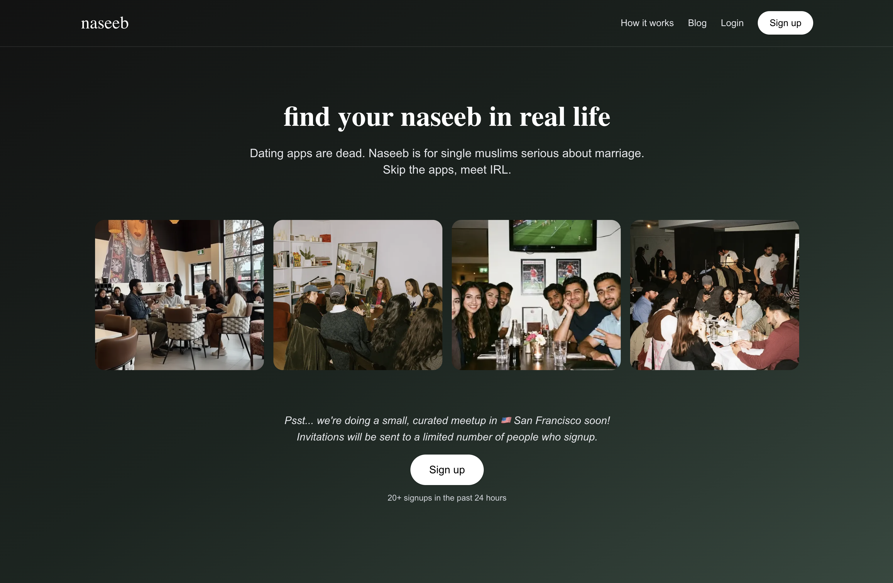
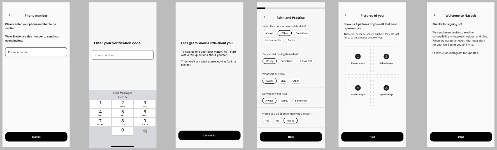

findnaseeb — In-Person Matchmaking
Case study · Co-founder · 2026–Present · findnaseeb.com
I co-founded findnaseeb, an in-person matchmaking platform for the Muslim community. I built the app, APIs, data model, and the invite workflow we use to decide who gets invited to each event.
200+ members · zero ad spend · 3-city waitlist · human-reviewed invites
Product screens


The product bet
Most matchmaking apps are built around swiping, profiles, and endless browsing. We wanted the opposite: get the right people into the same room. That made the invite list the real product work.
What I built
- A Next.js and TypeScript app with the APIs behind profiles, events, invitations, and attendance.
- The data model for members, event cohorts, attendance history, and safety actions.
- A guest-list draft step that uses profile and event context, then gets reviewed by us before invites go out.
- Admin and safety basics, including manual review points and member blocking.
How curation works
A tradeoff I'd defend. We use software to draft, but people still decide. For a small event-based product, quality matters more than fully automated matching, so every guest list is reviewed before invites go out. I also kept the stack deliberately simple: Next.js, TypeScript, and SQLite while we're still learning what events actually need.
Where it is now
- 200+ members in Calgary, grown with zero ad spend through organic Instagram and TikTok.
- Waitlists open in Toronto, Vancouver, and Chicago.